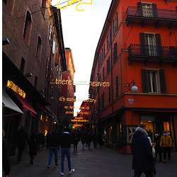

街紹介
Bologna

イタリア北部のエミリア・ロマーニャ州に位置し、美しい赤レンガの建物が立ち並びます。
象徴的な ガリバルディ広場 や、アジネッリの塔 などの中世の面影を残っており、
長さ38kmにも及ぶ ポルティコ（柱廊） は、雨の日でも快適に散策できるのも特徴です。
美食の都 としても世界的に有名で ボロネーゼ発祥の地として知られ、
スープ仕立ての トルテッリーニ・イン・ブロード など、伝統的な料理が楽しめます。
お焼きの食感 ティジェッレ に、地元名産 モルタデッラ を挟んで味わうのもおすすめです。
